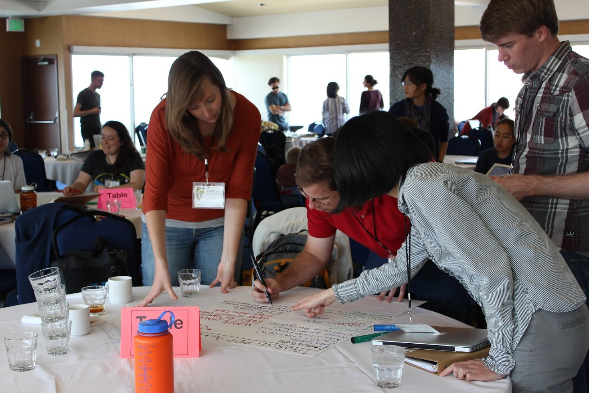

Science by Doing
Caitlin Casey's Teaching Page
Current students can find my AST307 course website on CANVAS.
Philosophy on Learning
Fostering scientific literacy is my top priority, whether it be in informal everyday interactions, in front of a classroom, advising students, or reaching out to the community. Scientific literacy is a challenging task to master in an era when rote memorization is praised and limitless information is ready at the swipe of a finger. My philosophy on teaching and learning is based on understanding what learners bring to the classroom, deconstructing misconceptions and slowly building understanding up from a solid base of understanding. I also strive to teach and advise equitably and inclusively, mindful of historical social norms that have marginalized certain voices in our classrooms, in our research spaces, and in our celebrated discoveries. Serving all learners requires we prioritize safe, accessible learning environments.
Experience
Working with a group of UT astronomers (Chao-Ling Hung, Adam McKay and Aaron Smith) at the 2016 Institute for Science and Engineer Educators (ISEE) Inquiry Institute, designing an inquiry-based lesson on selection effects for summer undergraduate research students.
Formal Coursework
Spring 2018, UT Austin, AST 307, Introductory Astronomy, 80 students
an introductory overview astronomy course for undergraduate science majors
Fall 2017, UT Austin, AST 386, High-Redshift Galaxies (Graduate Course), 6 students
an introductory overview astronomy course for undergraduate science majors
Spring 2017, UT Austin, AST 307, Introductory Astronomy, 80 students
an introductory overview astronomy course for undergraduate science majors
Fall 2016, UT Austin, AST 307, Introductory Astronomy, 80 students
an introductory overview astronomy course for undergraduate science majors
Spring 2016, UT Austin, AST 307, Introductory Astronomy, 58 students
an introductory overview astronomy course for undergraduate science majors
Spring 2012, Univ. Hawaii, ASTR 735, Research Techniques, 12 students
a research, analysis, and writing techniques course for astro graduate students
Fall 2005, Univ. Arizona, HNRS 195, Paladins Orientation, 15 students
a weekly writing seminar for honors freshmen to ease their transition to college
Other Teaching Experience
Curriculum Design for the Institute for Science and Engineer Educators (ISEE) program,
a participant in their 2013, 2016 Professional Development Programs:
Physics of Waves, Kapiolani Community College course for STEM-focused students, 2013
Selection Effects, UT Austin TAURUS Summer Research Program, 2016
One-off Lecturer for courses at University of California Irvine:
Graduate Cosmology, Spring 2014
High-Energy Astrophysics, Spring 2015
Students Supervised
Sinclaire Manning, 3rd year graduate student at UT Austin (2015-present)
Jackie Champagne, 2nd year graduate student at UT Austin (2016-present)
Patrick Drew, 2nd year graduate student at UT Austin (2016-present)
Anne Burnham, undergraduate student at UT Austin (2017-present)
Aimee Schechter, undergraduate student at UT Austin (2017-present)
Richard Seifert, undergraduate student at UT Austin (2016-present)
Yi-Kuan Chiang, UT Austin graduate, now JSPS Fellow at NAOJ (2015-2016)
Jonathon Brown, MIT undergraduate, 2017 TAURUS Scholar (2017)
Meghana Killi, undergraduate student at UT Austin, current grad student at DAWN Copenhagen (2016-2018)
Pranav Nair, undergraduate student at UT Austin (2016)
Nicholas Timmons, UCI undergraduate, now UCI grad student (2014-2015)
Donald Trinh, UCI undergraduate (2014-2015)
Erwin Medina, UCI undergraduate (2014)
Laura Yu, UCI undergraduate (2014)
Yanxia Li, IfA/UH graduate student (2013)
Chao-Ling Hung, IfA/UH graduate, now Harlan J. Smith Fellow at UT Austin (2012-2013)
Nicholas Lee, IfA/UH graduate, now DARK Copenhagen Postdoc (2012-2013)
Jamie Budynkiewicz, IfA REU undergraduate, now CfA/SAO staff (2012)